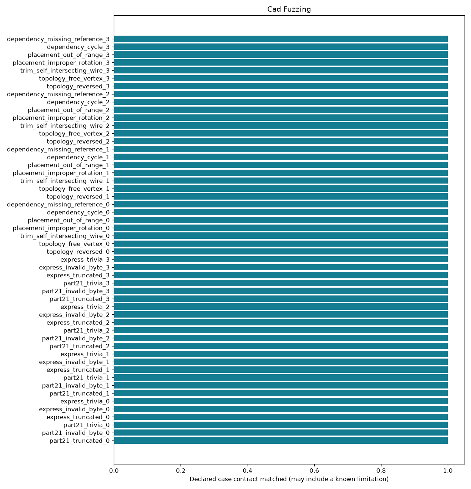

Offline, bounded research controls. A passing check may document a failure or an abstention.
| control_id | family | mutation | outcome | expected | checks_pass |
|---|---|---|---|---|---|
| part21_truncated_0 | part21 | truncate | reject | reject | True |
| part21_invalid_byte_0 | part21 | insert_nul | reject | reject | True |
| part21_trivia_0 | part21 | prefix_comment | accept | accept | True |
| express_truncated_0 | express | truncate | reject | reject | True |
| express_invalid_byte_0 | express | insert_nul | reject | reject | True |
| express_trivia_0 | express | prefix_comment | accept | accept | True |
| part21_truncated_1 | part21 | truncate | reject | reject | True |
| part21_invalid_byte_1 | part21 | insert_nul | reject | reject | True |
| part21_trivia_1 | part21 | prefix_comment | accept | accept | True |
| express_truncated_1 | express | truncate | reject | reject | True |
| express_invalid_byte_1 | express | insert_nul | reject | reject | True |
| express_trivia_1 | express | prefix_comment | accept | accept | True |
| part21_truncated_2 | part21 | truncate | reject | reject | True |
| part21_invalid_byte_2 | part21 | insert_nul | reject | reject | True |
| part21_trivia_2 | part21 | prefix_comment | accept | accept | True |
| express_truncated_2 | express | truncate | reject | reject | True |
| express_invalid_byte_2 | express | insert_nul | reject | reject | True |
| express_trivia_2 | express | prefix_comment | accept | accept | True |
| part21_truncated_3 | part21 | truncate | reject | reject | True |
| part21_invalid_byte_3 | part21 | insert_nul | reject | reject | True |
| part21_trivia_3 | part21 | prefix_comment | accept | accept | True |
| express_truncated_3 | express | truncate | reject | reject | True |
| express_invalid_byte_3 | express | insert_nul | reject | reject | True |
| express_trivia_3 | express | prefix_comment | accept | accept | True |
| topology_reversed_0 | topology | reversed | reject | reject | True |
| topology_free_vertex_0 | topology | free_vertex | reject | reject | True |
| trim_self_intersecting_wire_0 | trim | self_intersecting_wire | reject | reject | True |
| placement_improper_rotation_0 | placement | improper_rotation | reject | reject | True |
| placement_out_of_range_0 | placement | out_of_range | reject | reject | True |
| dependency_cycle_0 | dependency | cycle | reject | reject | True |
| dependency_missing_reference_0 | dependency | missing_reference | reject | reject | True |
| topology_reversed_1 | topology | reversed | reject | reject | True |
| topology_free_vertex_1 | topology | free_vertex | reject | reject | True |
| trim_self_intersecting_wire_1 | trim | self_intersecting_wire | reject | reject | True |
| placement_improper_rotation_1 | placement | improper_rotation | reject | reject | True |
| placement_out_of_range_1 | placement | out_of_range | reject | reject | True |
| dependency_cycle_1 | dependency | cycle | reject | reject | True |
| dependency_missing_reference_1 | dependency | missing_reference | reject | reject | True |
| topology_reversed_2 | topology | reversed | reject | reject | True |
| topology_free_vertex_2 | topology | free_vertex | reject | reject | True |
| trim_self_intersecting_wire_2 | trim | self_intersecting_wire | reject | reject | True |
| placement_improper_rotation_2 | placement | improper_rotation | reject | reject | True |
| placement_out_of_range_2 | placement | out_of_range | reject | reject | True |
| dependency_cycle_2 | dependency | cycle | reject | reject | True |
| dependency_missing_reference_2 | dependency | missing_reference | reject | reject | True |
| topology_reversed_3 | topology | reversed | reject | reject | True |
| topology_free_vertex_3 | topology | free_vertex | reject | reject | True |
| trim_self_intersecting_wire_3 | trim | self_intersecting_wire | reject | reject | True |
| placement_improper_rotation_3 | placement | improper_rotation | reject | reject | True |
| placement_out_of_range_3 | placement | out_of_range | reject | reject | True |
| dependency_cycle_3 | dependency | cycle | reject | reject | True |
| dependency_missing_reference_3 | dependency | missing_reference | reject | reject | True |
Detailed evidence · CSV · Contract
